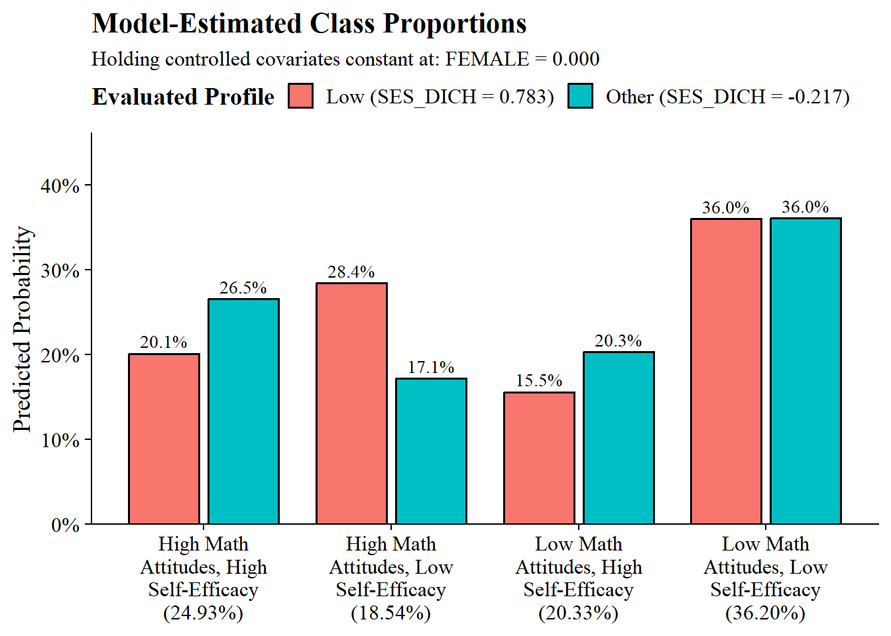
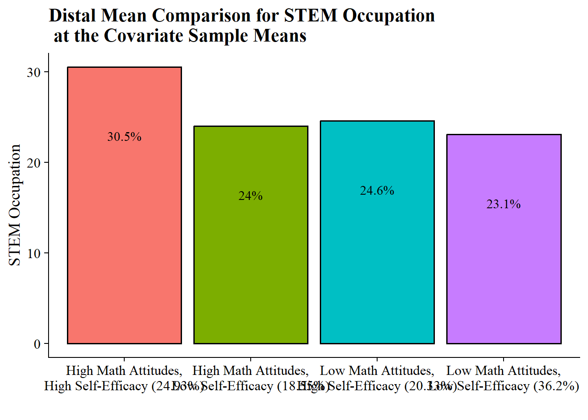

28 Math Attitudes with STEM Career Attainment (Dang, M., & Nylund-Gibson, K., 2017)
-
BY = Base Year (2002) - 10th grade
- Completed the baseline survey of high school sophomores in spring term 2002.
-
F1 = First follow up (2004) - 12th grade
- Most sample members were seniors, but some were dropouts or in other grades (early graduates or retained in an earlier grade).
F2 = Second follow up (2006) - Post-high-school follow-up
F3 = Third follow up (2012) - Kids are ~26yo
28.1 Item Descriptions
28.1.1 Base Year Covariates
English Proficiency BYS70A: How well student understands English (1 = Very well, 4 = Not at all) BYS70B: How well student speaks English (1 = Very well, 4 = Not at all) BYS70C: How well student reads English (1 = Very well, 4 = Not at all) BYS70D: How well 10th-grader writes English (1 = Very well, 4 = Not at all) BYTM12B: Student behind on schoolwork due to limited proficiency in English BYSTLANG: English if student’s native language
Demographics BYSEX: 1 = Male, 2 = Female BYRACE_R: All -5 since restricted BYSES2QU: SES Quartile
28.1.2 Base Year Indicators
BYS87A: When I do mathematics, I sometimes get totally absorbed BYS87C: Because doing mathematics is fun, I wouldn’t want to give it up BYS87F: Mathematics is important to me personally
BYS89A: I’m confident that I can do an excellent job on my math tests BYS89B: I’m certain I can understand the most difficult material presented in math texts BYS89L: I’m confident I can understand the most complex material presented by my math teacher BYS89R: I’m confident I can do an excellent job on my math assignments BYS89U: I’m certain I can master the skills being taught in my math class
Math Attitude BYS87 Items
Description: How much do you agree or disagree with the following statements?
Response options:
1 - Strongly agree
2 - Agree
3 - Disagree
4- Strongly disagree
Math Self-Efficacy BYS89/F1S18 Items
Description: How much do you agree or disagree with the following statements?
Response options:
1 - Almost never
2 - Sometimes
3 - Often
4- Almost always
28.1.3 F1 Indicators
F1S18A: I’m confident that I can do an excellent job on my math tests F1S18B: I’m certain I can understand the most difficult material presented in my math textbooks F1S18C: I’m confident I can understand the most complex material presented by my math teacher F1S18D: I’m confident I can do an excellent job on my math assignments F1S18E: I’m certain I can master the skills being taught in my math class
28.2 Read in data
Read in ELS .sav file:
View codebook:
#view_df(els_sav)Save subset:
els_subset <- els_sav %>%
clean_names() %>%
dplyr::select(
stu_id, strat_id, psu,
bys87a,bys87c,bys87f,bys89a,bys89b,bys89l,bys89r,bys89u,
f1s18a,f1s18b,f1s18c,f1s18d,f1s18e,
bys70a,bys70b,bys70c,bys70d,bystlang,bytm12b,bysex,byrace_r,
byses2qu,f3onet2curr,f3onet6curr, f3bystemoc30, f3bytscwt
) %>%
mutate(school = paste0(strat_id,psu))
view_df(els_subset)
#write_csv(els_subset, here("29-dang-lca-example", "els_data", "els_dang_analysis.csv"))Read in ELS data file, els_dang_analysis.csv.
bys87_items <- c("bys87a","bys87c","bys87f")
f1s18_items <- c("f1s18a","f1s18b","f1s18c","f1s18d","f1s18e")
bys89_items <- c("bys89a","bys89b","bys89l","bys89r","bys89u")
els_data <- read_csv(
here("29-dang-lca-example", "els_data", "els_dang_analysis.csv"),
na = c("-9", "-8", "-6", "-5", "-4", "-7", "-1", "-3", "-2", "-99")
) %>%
# Dichotomize English proficiency
mutate(across(
c(bys70a, bys70b, bys70c, bys70d),
~ case_when(. %in% c(1, 2) ~ 1,
. %in% c(3, 4) ~ 0,
TRUE ~ NA_real_)
)) %>%
mutate(across(
c(f3onet2curr),
~ case_when(is.na(.) ~ NA_real_,
. %in% c(11, 15, 17, 19, 25, 45, 51) ~ 1,
TRUE ~ 0)
)) %>%
mutate(female = case_match(bysex,
2 ~ 1,
1 ~ 0,
.default = NA_real_)) %>%
mutate(ses_dichotomized = case_match(
byses2qu,
1 ~ 1,
NA ~ NA,
.default = 0
)) %>%
mutate(across(
all_of(bys87_items),
~ case_when(. %in% c(1, 2) ~ 1,
. %in% c(3, 4) ~ 0,
TRUE ~ NA_real_)
)) %>%
mutate(across(all_of(c(
bys89_items, f1s18_items
)), ~ case_when(
. %in% c(1, 2) ~ 0,
. %in% c(3, 4) ~ 1,
TRUE ~ NA_real_
)))
summary(els_data)
#> stu_id strat_id psu
#> Min. :101101 Min. :101.0 Min. :1.000
#> 1st Qu.:190106 1st Qu.:190.0 1st Qu.:1.000
#> Median :281116 Median :281.0 Median :2.000
#> Mean :279543 Mean :279.4 Mean :1.557
#> 3rd Qu.:369205 3rd Qu.:369.0 3rd Qu.:2.000
#> Max. :461234 Max. :461.0 Max. :3.000
#>
#> bys87a bys87c bys87f
#> Min. :0.0000 Min. :0.0000 Min. :0.0000
#> 1st Qu.:0.0000 1st Qu.:0.0000 1st Qu.:0.0000
#> Median :1.0000 Median :0.0000 Median :1.0000
#> Mean :0.5181 Mean :0.3387 Mean :0.5108
#> 3rd Qu.:1.0000 3rd Qu.:1.0000 3rd Qu.:1.0000
#> Max. :1.0000 Max. :1.0000 Max. :1.0000
#> NAs :4457 NAs :4523 NAs :4439
#> bys89a bys89b bys89l
#> Min. :0.0000 Min. :0.0000 Min. :0.0000
#> 1st Qu.:0.0000 1st Qu.:0.0000 1st Qu.:0.0000
#> Median :0.0000 Median :0.0000 Median :0.0000
#> Mean :0.4436 Mean :0.3987 Mean :0.4482
#> 3rd Qu.:1.0000 3rd Qu.:1.0000 3rd Qu.:1.0000
#> Max. :1.0000 Max. :1.0000 Max. :1.0000
#> NAs :4806 NAs :4765 NAs :5150
#> bys89r bys89u f1s18a
#> Min. :0.0000 Min. :0.000 Min. :0.0000
#> 1st Qu.:0.0000 1st Qu.:0.000 1st Qu.:0.0000
#> Median :1.0000 Median :1.000 Median :0.0000
#> Mean :0.5168 Mean :0.534 Mean :0.4841
#> 3rd Qu.:1.0000 3rd Qu.:1.000 3rd Qu.:1.0000
#> Max. :1.0000 Max. :1.000 Max. :1.0000
#> NAs :5374 NAs :5536 NAs :5860
#> f1s18b f1s18c f1s18d
#> Min. :0.0000 Min. :0.0000 Min. :0.0000
#> 1st Qu.:0.0000 1st Qu.:0.0000 1st Qu.:0.0000
#> Median :0.0000 Median :0.0000 Median :1.0000
#> Mean :0.4093 Mean :0.4506 Mean :0.6541
#> 3rd Qu.:1.0000 3rd Qu.:1.0000 3rd Qu.:1.0000
#> Max. :1.0000 Max. :1.0000 Max. :1.0000
#> NAs :5883 NAs :5907 NAs :5913
#> f1s18e bys70a bys70b
#> Min. :0.0000 Min. :0.0000 Min. :0.0000
#> 1st Qu.:0.0000 1st Qu.:1.0000 1st Qu.:1.0000
#> Median :1.0000 Median :1.0000 Median :1.0000
#> Mean :0.5899 Mean :0.9522 Mean :0.9272
#> 3rd Qu.:1.0000 3rd Qu.:1.0000 3rd Qu.:1.0000
#> Max. :1.0000 Max. :1.0000 Max. :1.0000
#> NAs :5903 NAs :13916 NAs :13904
#> bys70c bys70d bystlang
#> Min. :0.0000 Min. :0.0000 Min. :0.0000
#> 1st Qu.:1.0000 1st Qu.:1.0000 1st Qu.:1.0000
#> Median :1.0000 Median :1.0000 Median :1.0000
#> Mean :0.9222 Mean :0.8954 Mean :0.8304
#> 3rd Qu.:1.0000 3rd Qu.:1.0000 3rd Qu.:1.0000
#> Max. :1.0000 Max. :1.0000 Max. :1.0000
#> NAs :13923 NAs :13913 NAs :953
#> bytm12b bysex byrace_r
#> Min. :0.00000 Min. :1.000 Mode:logical
#> 1st Qu.:0.00000 1st Qu.:1.000 NAs :16197
#> Median :0.00000 Median :2.000
#> Mean :0.03861 Mean :1.502
#> 3rd Qu.:0.00000 3rd Qu.:2.000
#> Max. :1.00000 Max. :2.000
#> NAs :11924 NAs :827
#> byses2qu f3onet2curr f3onet6curr
#> Min. :1.000 Min. :0.000 Mode:logical
#> 1st Qu.:2.000 1st Qu.:0.000 NAs :16197
#> Median :3.000 Median :0.000
#> Mean :2.574 Mean :0.271
#> 3rd Qu.:4.000 3rd Qu.:1.000
#> Max. :4.000 Max. :1.000
#> NAs :953 NAs :3401
#> f3bytscwt school female
#> Min. : 0.0 Min. :1011 Min. :0.0000
#> 1st Qu.: 0.0 1st Qu.:1901 1st Qu.:0.0000
#> Median : 150.7 Median :2811 Median :1.0000
#> Mean : 200.6 Mean :2795 Mean :0.5021
#> 3rd Qu.: 310.3 3rd Qu.:3692 3rd Qu.:1.0000
#> Max. :2163.2 Max. :4612 Max. :1.0000
#> NAs :827
#> ses_dichotomized
#> Min. :0.0000
#> 1st Qu.:0.0000
#> Median :0.0000
#> Mean :0.2362
#> 3rd Qu.:0.0000
#> Max. :1.0000
#> NAs :953
summary(factor(els_data$bys70a))
#> 0 1 NAs
#> 109 2172 13916
summary(factor(els_data$bys70b))
#> 0 1 NAs
#> 167 2126 13904
summary(factor(els_data$bys70c))
#> 0 1 NAs
#> 177 2097 13923
summary(factor(els_data$bys70d))
#> 0 1 NAs
#> 239 2045 13913
summary(factor(els_data$bystlang))
#> 0 1 NAs
#> 2586 12658 953
summary(factor(els_data$f3onet2curr))
#> 0 1 NAs
#> 9328 3468 3401
summary(factor(els_data$female))
#> 0 1 NAs
#> 7653 7717 827
summary(factor(els_data$bysex))
#> 1 2 NAs
#> 7653 7717 827
summary(factor(els_data$byses2qu))
#> 1 2 3 4 NAs
#> 3600 3590 3753 4301 953
summary(factor(els_data$ses_dichotomized))
#> 0 1 NAs
#> 11644 3600 95328.3 Descriptive Statistics
Linguistic Minority
“Respondents were classified as linguistic minority if they reported that English was not their first language and they responded that they read,speak, write, and/or understand English well. Respondents were classified as native English speakers if they indicated they speak English as a first language and they read, speak, write, and understand English well. Using these criteria, among the total 8,790 students, 7,490 (85.2%) were classified as native English speakers, 1,040 (11.8%) were classified as linguistic minority students, and 260 (3.0%) were classified as ELLs.” (page 8)
BYS70A: How well student understands English (1 = Very well, 4 = Not at all) but already dichotomized BYS70B: How well student speaks English (1 = Very well, 4 = Not at all) but already dichotomized BYS70C: How well student reads English (1 = Very well, 4 = Not at all) but already dichotomized BYS70D: How well 10th-grader writes English (1 = Very well, 4 = Not at all) but already dichotomized BYTM12B: Student behind on schoolwork due to limited proficiency in English
ling_min <- els_subset %>%
mutate(across(where(is.labelled), zap_labels)) %>%
replace_with_na_all(condition = ~.x %in% c(-9,-8,-6,-5,-4,-7,-1,-3,-2,-99)) %>%
select(bys70a,bys70b,bys70c,bys70d,bytm12b)
f <- All(ling_min) ~ Mean + SD + Min + Median + Max + Histogram
datasummary(f, els_subset, output="markdown")
summary(factor(ling_min$bys70a))
summary(factor(ling_min$bys70b))
summary(factor(ling_min$bys70c))
summary(factor(ling_min$bys70d))
summary(factor(ling_min$bytm12b))
# Trying to create the linguistic minority variable:
ling_minority_var <- els_data %>%
mutate(
lang_status = case_when(
# Condition A: Native English Speaker
# Native language is English AND proficient in all 4 domains
bystlang == 1 & bys70a == 1 & bys70b == 1 & bys70c == 1 & bys70d == 1
~ "Native English Speaker",
# Condition B: Linguistic Minority
# Not native English speaker, BUT reads, speaks, writes, and/or understands well
bystlang == 0 & (bys70a == 1 | bys70b == 1 | bys70c == 1 | bys70d == 1)
~ "Linguistic Minority",
# Condition C: ELL (English Language Learner)
# Not native English speaker AND has limited proficiency / behind in schoolwork
bystlang == 0 & (bytm12b == 1 | (bys70a != 1 & bys70b != 1 & bys70c != 1 & bys70d != 1))
~ "ELL",
# If data is missing for vital logic pieces, preserve it as NA
TRUE ~ NA_character_
),
# Convert to a factor for clean modeling/summaries later
lang_status = factor(lang_status, levels = c("Native English Speaker", "Linguistic Minority", "ELL"))
)
summary(factor(ling_minority_var$lang_status))
math_subset <- els_data %>%
select(bys87a,bys87c,bys87f,bys89a,bys89b,bys89l,bys89r,bys89u,f1s18a,f1s18b,f1s18c,f1s18d,f1s18e) Descriptive
f <- All(math_subset) ~ Mean + SD + Min + Median + Max + Histogram
datasummary(f, els_data, output="markdown")| Mean | SD | Min | Median | Max | Histogram | |
|---|---|---|---|---|---|---|
| bys87a | 0.52 | 0.50 | 0.00 | 1.00 | 1.00 | ▇▇ |
| bys87c | 0.34 | 0.47 | 0.00 | 0.00 | 1.00 | ▇▄ |
| bys87f | 0.51 | 0.50 | 0.00 | 1.00 | 1.00 | ▇▇ |
| bys89a | 0.44 | 0.50 | 0.00 | 0.00 | 1.00 | ▇▆ |
| bys89b | 0.40 | 0.49 | 0.00 | 0.00 | 1.00 | ▇▅ |
| bys89l | 0.45 | 0.50 | 0.00 | 0.00 | 1.00 | ▇▆ |
| bys89r | 0.52 | 0.50 | 0.00 | 1.00 | 1.00 | ▇▇ |
| bys89u | 0.53 | 0.50 | 0.00 | 1.00 | 1.00 | ▆▇ |
| f1s18a | 0.48 | 0.50 | 0.00 | 0.00 | 1.00 | ▇▇ |
| f1s18b | 0.41 | 0.49 | 0.00 | 0.00 | 1.00 | ▇▅ |
| f1s18c | 0.45 | 0.50 | 0.00 | 0.00 | 1.00 | ▇▆ |
| f1s18d | 0.65 | 0.48 | 0.00 | 1.00 | 1.00 | ▄▇ |
| f1s18e | 0.59 | 0.49 | 0.00 | 1.00 | 1.00 | ▅▇ |
Weighted average
bys87_items <- c("bys87a","bys87c","bys87f")
f1s18_items <- c("f1s18a","f1s18b","f1s18c","f1s18d","f1s18e")
bys89_items <- c("bys89a","bys89b","bys89l","bys89r","bys89u")
math_binary_weighted <- els_data %>%
summarise(across(c(all_of(bys87_items), all_of(c(bys89_items, f1s18_items))),
list(
w_mean = ~ weighted.mean(.x, f3bytscwt, na.rm = TRUE),
w_sd = ~ {
keep <- !is.na(.x) & !is.na(f3bytscwt)
x <- .x[keep]
w_raw <- f3bytscwt[keep]
w <- w_raw / sum(w_raw)
mu <- sum(w * x)
sqrt(sum(w * (x - mu)^2))
}
),
.names = "{.col}_{.fn}"
)) %>%
pivot_longer(
cols = everything(),
names_to = c("item", ".value"),
names_pattern = "(.*)_(w_mean|w_sd)"
)
math_binary_weighted
#> # A tibble: 13 × 3
#> item w_mean w_sd
#> <chr> <dbl> <dbl>
#> 1 bys87a 0.508 0.500
#> 2 bys87c 0.333 0.471
#> 3 bys87f 0.504 0.500
#> 4 bys89a 0.450 0.497
#> 5 bys89b 0.401 0.490
#> 6 bys89l 0.452 0.498
#> 7 bys89r 0.520 0.500
#> 8 bys89u 0.538 0.499
#> 9 f1s18a 0.483 0.500
#> 10 f1s18b 0.407 0.491
#> 11 f1s18c 0.452 0.498
#> 12 f1s18d 0.655 0.475
#> 13 f1s18e 0.589 0.492
library(tidyverse)
library(gt)
item_labels <- tibble(
item = c(
"bys87a", "bys87c", "bys87f",
"f1s18a", "f1s18b", "f1s18c", "f1s18d", "f1s18e",
"bys89a", "bys89b", "bys89l", "bys89r", "bys89u"
),
scale = c(
rep("Math attitudes", 3),
rep("Math self-efficacy", 5),
rep("Math experiences", 5)
),
item_label = c(
"I enjoy math",
"Math is one of my best subjects",
"Math is useful for my future",
"Certain I can understand math",
"Certain I can do well in math",
"Certain I can learn math",
"Certain I can master math skills",
"Certain I can complete math assignments",
"Took advanced math",
"Participated in math club",
"Worked hard in math",
"Talked with teacher about math",
"Planned to take more math"
)
)
math_binary_weighted_table <- math_binary_weighted %>%
left_join(item_labels, by = "item") %>%
mutate(
percent_endorsed = w_mean * 100,
sd = w_sd
) %>%
select(scale, item, item_label, percent_endorsed, sd)
math_binary_weighted_table %>%
gt(groupname_col = "scale") %>%
cols_label(
item = "Item",
item_label = "Item wording",
percent_endorsed = "% endorsed",
sd = "SD"
) %>%
fmt_number(
columns = c(percent_endorsed, sd),
decimals = 2
) %>%
tab_header(
title = "Weighted Descriptive Statistics for Binary Math Indicators",
subtitle = "Weighted means represent the percentage endorsing the focal response category"
) %>%
tab_options(
table.font.size = 13,
heading.title.font.size = 16,
heading.subtitle.font.size = 12,
row_group.font.weight = "bold",
column_labels.font.weight = "bold"
)| Weighted Descriptive Statistics for Binary Math Indicators | |||
| Weighted means represent the percentage endorsing the focal response category | |||
| Item | Item wording | % endorsed | SD |
|---|---|---|---|
| Math attitudes | |||
| bys87a | I enjoy math | 50.79 | 0.50 |
| bys87c | Math is one of my best subjects | 33.27 | 0.47 |
| bys87f | Math is useful for my future | 50.39 | 0.50 |
| Math experiences | |||
| bys89a | Took advanced math | 44.97 | 0.50 |
| bys89b | Participated in math club | 40.10 | 0.49 |
| bys89l | Worked hard in math | 45.20 | 0.50 |
| bys89r | Talked with teacher about math | 51.97 | 0.50 |
| bys89u | Planned to take more math | 53.76 | 0.50 |
| Math self-efficacy | |||
| f1s18a | Certain I can understand math | 48.28 | 0.50 |
| f1s18b | Certain I can do well in math | 40.74 | 0.49 |
| f1s18c | Certain I can learn math | 45.17 | 0.50 |
| f1s18d | Certain I can master math skills | 65.52 | 0.48 |
| f1s18e | Certain I can complete math assignments | 58.94 | 0.49 |
Proportions
# Dichotomize
math_binary <- els_data %>%
select(bys87_items,bys89_items,f1s18_items, f3bytscwt, f3onet2curr, bystlang, stu_id)
# Set up data to find proportions of binary indicators
ds <- math_binary %>%
select(-f3bytscwt, -bystlang, -stu_id, -f3onet2curr) %>%
pivot_longer(
cols = everything(),
names_to = "variable",
values_to = "value"
)
# Create table of variables and counts, then find proportions and round to 3 decimal places
prop_df <- ds %>%
count(variable, value) %>%
group_by(variable) %>%
mutate(prop = n / sum(n)) %>%
ungroup() %>%
mutate(prop = round(prop, 3))
# Make it a gt() table
prop_table <- prop_df %>%
gt(groupname_col = "variable", rowname_col = "value") %>%
tab_stubhead(label = md("*Values*")) %>%
tab_header(
md(
"Variable Proportions"
)
) %>%
cols_label(
variable = md("*Variable*"),
value = md("*Value*"),
n = md("*N*"),
prop = md("*Proportion*")
)
prop_table| Variable Proportions | ||
| Values | N | Proportion |
|---|---|---|
| bys87a | ||
| 0 | 5658 | 0.349 |
| 1 | 6082 | 0.376 |
| NA | 4457 | 0.275 |
| bys87c | ||
| 0 | 7720 | 0.477 |
| 1 | 3954 | 0.244 |
| NA | 4523 | 0.279 |
| bys87f | ||
| 0 | 5752 | 0.355 |
| 1 | 6006 | 0.371 |
| NA | 4439 | 0.274 |
| bys89a | ||
| 0 | 6338 | 0.391 |
| 1 | 5053 | 0.312 |
| NA | 4806 | 0.297 |
| bys89b | ||
| 0 | 6874 | 0.424 |
| 1 | 4558 | 0.281 |
| NA | 4765 | 0.294 |
| bys89l | ||
| 0 | 6096 | 0.376 |
| 1 | 4951 | 0.306 |
| NA | 5150 | 0.318 |
| bys89r | ||
| 0 | 5230 | 0.323 |
| 1 | 5593 | 0.345 |
| NA | 5374 | 0.332 |
| bys89u | ||
| 0 | 4968 | 0.307 |
| 1 | 5693 | 0.351 |
| NA | 5536 | 0.342 |
| f1s18a | ||
| 0 | 5333 | 0.329 |
| 1 | 5004 | 0.309 |
| NA | 5860 | 0.362 |
| f1s18b | ||
| 0 | 6092 | 0.376 |
| 1 | 4222 | 0.261 |
| NA | 5883 | 0.363 |
| f1s18c | ||
| 0 | 5653 | 0.349 |
| 1 | 4637 | 0.286 |
| NA | 5907 | 0.365 |
| f1s18d | ||
| 0 | 3557 | 0.220 |
| 1 | 6727 | 0.415 |
| NA | 5913 | 0.365 |
| f1s18e | ||
| 0 | 4222 | 0.261 |
| 1 | 6072 | 0.375 |
| NA | 5903 | 0.364 |
psych::describe(math_binary)
#> vars n mean sd median
#> bys87a 1 11740 0.52 0.50 1.00
#> bys87c 2 11674 0.34 0.47 0.00
#> bys87f 3 11758 0.51 0.50 1.00
#> bys89a 4 11391 0.44 0.50 0.00
#> bys89b 5 11432 0.40 0.49 0.00
#> bys89l 6 11047 0.45 0.50 0.00
#> bys89r 7 10823 0.52 0.50 1.00
#> bys89u 8 10661 0.53 0.50 1.00
#> f1s18a 9 10337 0.48 0.50 0.00
#> f1s18b 10 10314 0.41 0.49 0.00
#> f1s18c 11 10290 0.45 0.50 0.00
#> f1s18d 12 10284 0.65 0.48 1.00
#> f1s18e 13 10294 0.59 0.49 1.00
#> f3bytscwt 14 16197 200.58 212.77 150.69
#> f3onet2curr 15 12796 0.27 0.44 0.00
#> bystlang 16 15244 0.83 0.38 1.00
#> stu_id 17 16197 279542.70 104263.77 281116.00
#> trimmed mad min max range
#> bys87a 0.52 0.00 0 1.00 1.00
#> bys87c 0.30 0.00 0 1.00 1.00
#> bys87f 0.51 0.00 0 1.00 1.00
#> bys89a 0.43 0.00 0 1.00 1.00
#> bys89b 0.37 0.00 0 1.00 1.00
#> bys89l 0.44 0.00 0 1.00 1.00
#> bys89r 0.52 0.00 0 1.00 1.00
#> bys89u 0.54 0.00 0 1.00 1.00
#> f1s18a 0.48 0.00 0 1.00 1.00
#> f1s18b 0.39 0.00 0 1.00 1.00
#> f1s18c 0.44 0.00 0 1.00 1.00
#> f1s18d 0.69 0.00 0 1.00 1.00
#> f1s18e 0.61 0.00 0 1.00 1.00
#> f3bytscwt 167.57 223.42 0 2163.17 2163.17
#> f3onet2curr 0.21 0.00 0 1.00 1.00
#> bystlang 0.91 0.00 0 1.00 1.00
#> stu_id 279551.71 133070.76 101101 461234.00 360133.00
#> skew kurtosis se
#> bys87a -0.07 -1.99 0.00
#> bys87c 0.68 -1.54 0.00
#> bys87f -0.04 -2.00 0.00
#> bys89a 0.23 -1.95 0.00
#> bys89b 0.41 -1.83 0.00
#> bys89l 0.21 -1.96 0.00
#> bys89r -0.07 -2.00 0.00
#> bys89u -0.14 -1.98 0.00
#> f1s18a 0.06 -2.00 0.00
#> f1s18b 0.37 -1.86 0.00
#> f1s18c 0.20 -1.96 0.00
#> f1s18d -0.65 -1.58 0.00
#> f1s18e -0.37 -1.87 0.00
#> f3bytscwt 1.43 3.18 1.67
#> f3onet2curr 1.03 -0.94 0.00
#> bystlang -1.76 1.10 0.00
#> stu_id 0.00 -1.20 819.25
# Item labels
item_labels <- tibble(
variable = c(
"bys87a", "bys87c", "bys87f",
"bys89a", "bys89b", "bys89l", "bys89r", "bys89u",
"f1s18a", "f1s18b", "f1s18c", "f1s18d", "f1s18e"
),
scale = c(
rep("Math attitudes", 3),
rep("Math experiences", 5),
rep("Math self-efficacy", 5)
),
item_label = c(
"I enjoy math",
"Math is one of my best subjects",
"Math is useful for my future",
"Took advanced math",
"Participated in math club",
"Worked hard in math",
"Talked with teacher about math",
"Planned to take more math",
"Certain I can understand math",
"Certain I can do well in math",
"Certain I can learn math",
"Certain I can master math skills",
"Certain I can complete math assignments"
)
)
prop_table_data <- math_binary %>%
select(all_of(c(bys87_items, bys89_items, f1s18_items))) %>%
pivot_longer(
cols = everything(),
names_to = "variable",
values_to = "value"
) %>%
filter(!is.na(value)) %>%
count(variable, value, name = "n") %>%
group_by(variable) %>%
mutate(
total_n = sum(n),
prop = n / total_n
) %>%
ungroup() %>%
left_join(item_labels, by = "variable") %>%
mutate(
value_label = case_when(
value == 1 ~ "1 = endorsed",
value == 0 ~ "0 = not endorsed"
)
) %>%
select(scale, variable, item_label, value_label, n, total_n, prop)
prop_endorsed_table <- prop_table_data %>%
filter(value_label == "1 = endorsed") %>%
select(scale, variable, item_label, n, total_n, prop) %>%
gt(groupname_col = "scale") %>%
cols_label(
variable = "Item",
item_label = "Item wording",
n = "Endorsed N",
total_n = "Valid N",
prop = "% endorsed"
) %>%
fmt_percent(
columns = prop,
decimals = 1
) %>%
tab_header(
title = "Unweighted Endorsement Rates for Binary Math Indicators",
subtitle = "Endorsement refers to the response category recoded as 1"
) %>%
tab_options(
table.font.size = 13,
heading.title.font.size = 16,
heading.subtitle.font.size = 12,
row_group.font.weight = "bold",
column_labels.font.weight = "bold"
)
prop_endorsed_table| Unweighted Endorsement Rates for Binary Math Indicators | ||||
| Endorsement refers to the response category recoded as 1 | ||||
| Item | Item wording | Endorsed N | Valid N | % endorsed |
|---|---|---|---|---|
| Math attitudes | ||||
| bys87a | I enjoy math | 6082 | 11740 | 51.8% |
| bys87c | Math is one of my best subjects | 3954 | 11674 | 33.9% |
| bys87f | Math is useful for my future | 6006 | 11758 | 51.1% |
| Math experiences | ||||
| bys89a | Took advanced math | 5053 | 11391 | 44.4% |
| bys89b | Participated in math club | 4558 | 11432 | 39.9% |
| bys89l | Worked hard in math | 4951 | 11047 | 44.8% |
| bys89r | Talked with teacher about math | 5593 | 10823 | 51.7% |
| bys89u | Planned to take more math | 5693 | 10661 | 53.4% |
| Math self-efficacy | ||||
| f1s18a | Certain I can understand math | 5004 | 10337 | 48.4% |
| f1s18b | Certain I can do well in math | 4222 | 10314 | 40.9% |
| f1s18c | Certain I can learn math | 4637 | 10290 | 45.1% |
| f1s18d | Certain I can master math skills | 6727 | 10284 | 65.4% |
| f1s18e | Certain I can complete math assignments | 6072 | 10294 | 59.0% |
28.4 Math Attitudes & Self-Efficacy
28.4.1 Full Sample
Basic analysis
basic_t1 <- mplusObject(
TITLE = glue("Basic - T1"),
VARIABLE =
"categorical = bys87a,bys87c,bys87f,bys89a,
bys89b,bys89l,bys89r,bys89u;
usevar = bys87a,bys87c,bys87f,bys89a,
bys89b,bys89l,bys89r,bys89u;
WEIGHT = f3bytscwt;",
ANALYSIS =
"type = basic;",
OUTPUT = "sampstat;",
usevariables = colnames(math_binary),
rdata = math_binary)
basic_t1_fit <- mplusModeler(basic_t1,
dataout=here("basic.dat"),
modelout=here("basic.inp"),
check=TRUE, run = TRUE, hashfilename = FALSE)Enumeration
if (!dir.exists("enumeration")) {
dir.create("enumeration", recursive = TRUE)
}
t1_enum <- lapply(1:6, function(k) {
enum_t1 <- mplusObject(
TITLE = glue("Class {k} Math Attitudes & Efficacy - T1"),
VARIABLE = glue(
"categorical = bys87a,bys87c,bys87f,bys89a,
bys89b,bys89l,bys89r,bys89u;
usevar = bys87a,bys87c,bys87f,bys89a,
bys89b,bys89l,bys89r,bys89u;
WEIGHT = f3bytscwt;
classes = c({k});"),
ANALYSIS =
"estimator = mlr;
type = mixture;
starts = 500 100;
processors = 12;",
OUTPUT = "sampstat residual tech11 tech14;",
usevariables = colnames(math_binary),
rdata = math_binary)
enum_t1_fit <- mplusModeler(enum_t1,
dataout=here("enumeration","enum.dat"),
modelout=glue(here("enumeration","c{k}_math_weighted.inp")),
check=TRUE, run = TRUE, hashfilename = FALSE)
})Model Fit Summary
source(here("29-dang-lca-example","functions", "extract_mplus_info.R"))
source(here("29-dang-lca-example","functions","enum_table.R"))
# Define the directory where all of the .out files are located.
output_dir <- here("29-dang-lca-example","enumeration")
# Get all .out files
output_files <- list.files(output_dir, pattern = "\\.out$", full.names = TRUE)
# Process all .out files into one dataframe
final_data <- map_dfr(output_files, extract_mplus_info_extended)
# Extract Sample_Size from final_data
sample_size <- unique(final_data$Sample_Size)
output_enum <- readModels(here("29-dang-lca-example","enumeration"), quiet = TRUE)
enum_table_weights(output_enum)| Model Fit Summary Table1 | ||||||||||
| Classes | Par | LL | % Converged | % Replicated |
Model Fit Indices
|
LRTs
|
Smallest Class
|
|||
|---|---|---|---|---|---|---|---|---|---|---|
| BIC | aBIC | CAIC | AWE | VLMR | n (%) | |||||
| Class 1 Math Attitudes & Efficacy - T1 | 8 | −62,206.05 | 100% | 100% | 124,487.34 | 124,461.91 | 124,495.34 | 124,586.58 | – | 12146 (100%) |
| Class 2 Math Attitudes & Efficacy - T1 | 17 | −48,467.32 | 100% | 100% | 97,094.51 | 97,040.49 | 97,111.51 | 97,305.39 | <.001 | 5607 (46.2%) |
| Class 3 Math Attitudes & Efficacy - T1 | 26 | −47,104.20 | 55% | 62% | 94,452.93 | 94,370.30 | 94,478.93 | 94,775.45 | <.001 | 3782 (31.1%) |
| Class 4 Math Attitudes & Efficacy - T1 | 35 | −45,812.59 | 78% | 100% | 91,954.35 | 91,843.12 | 91,989.35 | 92,388.51 | <.001 | 2252 (18.5%) |
| Class 5 Math Attitudes & Efficacy - T1 | 44 | −45,344.55 | 76% | 92% | 91,102.92 | 90,963.09 | 91,146.92 | 91,648.73 | <.001 | 1584 (13%) |
| Class 6 Math Attitudes & Efficacy - T1 | 53 | −45,109.87 | 41% | 93% | 90,718.20 | 90,549.77 | 90,771.20 | 91,375.65 | 0.01 | 899 (7.4%) |
| 1 Note. Par = Parameters; LL = model log likelihood; BIC = Bayesian information criterion; aBIC = sample size adjusted BIC; CAIC = consistent Akaike information criterion; AWE = approximate weight of evidence criterion; VLMR = Vuong-Lo-Mendell-Rubin adjusted likelihood ratio test p-value; cmPk = approximate correct model probability. | ||||||||||
IC Plot

Plot LCA:
source(here("29-dang-lca-example", "functions","plot_lca.R"))
plot_lca(output_enum$c4_math_weighted.out)
28.5 Manual ML Three-step
28.5.1 Step 1 - Class Enumeration w/ Auxiliary Specification
This step is done after class enumeration (or after you have selected the best latent class model). In this example, the four class model was the best. Now, we re-estimate the five-class model using optseed for efficiency. The difference here is the SAVEDATA command, where I can save the posterior probabilities and the modal class assignment that will be used in steps two and three.
step1 <- mplusObject(
TITLE = "Step 1 - Three-Step",
VARIABLE =
"categorical = bys87a,bys87c,bys87f,bys89a,
bys89b,bys89l,bys89r,bys89u;
usevar = bys87a,bys87c,bys87f,bys89a,
bys89b,bys89l,bys89r,bys89u;
classes = c(4);
auxiliary =
female
ses_dichotomized
f3onet2curr;
WEIGHT = f3bytscwt;",
ANALYSIS =
"estimator = mlr;
type = mixture;
starts = 0;
optseed = 399671;",
SAVEDATA =
"File=savedata.dat;
Save=cprob;",
OUTPUT = "residual tech11 tech14",
usevariables = colnames(els_data),
rdata = els_data)
step1_fit <- mplusModeler(step1,
dataout=here("29-dang-lca-example", "three_step", "Step1.dat"),
modelout=here("29-dang-lca-example", "three_step", "one.inp") ,
check=TRUE, run = TRUE, hashfilename = FALSE)Plot LCA
Class 1 = Low Math Attitudes, High Self-Efficacy (20.33%) Class 2 = High Math Attitudes, Low Self-Efficacy (18.546%) Class 3 = High Math Attitudes, High Self-Efficacy (24.93%) Class 4 = Low Math Attitudes, Low Self-Efficacy (36.2%)
source(here("29-dang-lca-example", "functions", "plot_lca.R"))
output_one <- readModels(here("29-dang-lca-example", "three_step", "one.out"))
plot_lca(model_name = output_one)
Check that log-likelihood values are the same
output_one <- readModels(here("29-dang-lca-example", "three_step", "one.out"))
output_one$summaries$LL
#> [1] -45812.59
enumeration_c5 <- readModels(here("29-dang-lca-example", "enumeration", "c4_math_weighted.out"))
enumeration_c5$summaries$LL
#> [1] -45812.5928.5.2 Step 2 - Determine Measurement Error
Extract logits for the classification probabilities for the most likely latent class
logit_cprobs <- as.data.frame(output_one$class_counts$logitProbs.mostLikely)
logit_cprobs
#> 1 2 3 4
#> 1 2.691 -0.448 -0.013 0
#> 2 -0.893 1.664 -1.308 0
#> 3 3.261 2.159 5.684 0
#> 4 -3.825 -3.826 -5.953 0Extract saved dataset from step one
savedata <- as.data.frame(output_one$savedata) %>%
rename(N = MLCC) #Rename the column in savedata named "MLCC" and change to "N"Check variable names in savedata (Mplus will cut off variable names that are longer than 8 characters)
names(savedata)
#> [1] "BYS87A" "BYS87C" "BYS87F" "BYS89A" "BYS89B"
#> [6] "BYS89L" "BYS89R" "BYS89U" "FEMALE" "SES_DICH"
#> [11] "F3ONET2C" "CPROB1" "CPROB2" "CPROB3" "CPROB4"
#> [16] "N" "F3BYTSCW"28.5.3 Step 3 - LCA Auxiliary Variable Model with 2 covariates and 1 distal outcome
Model with 2 covariates (FEMALE, SES_DICH) and 1 distal outcome (STEM Occupation)
step3 <- mplusObject(
TITLE = "Step 3 - Three-Step",
VARIABLE =
"nominal=N;
classes = c(4);
usevar = N FEMALE SES_DICH F3ONET2C;
categorical = F3ONET2C;" , # Add covariates and distal outcomes in addition to `N` here
ANALYSIS =
"estimator = mlr;
type = mixture;
starts = 0;",
DEFINE =
"center FEMALE SES_DICH (grandmean);",
MODEL =
glue(
" %OVERALL%
F3ONET2C on FEMALE SES_DICH; ! covariate as a related to the distal outcome
C on female (f1-f3);
C on SES_DICH (s1-s3);
%C#1%
[n#1@{logit_cprobs[1,1]}]; ! MUST EDIT if you do not have a 5-class model.
[n#2@{logit_cprobs[1,2]}];
[n#3@{logit_cprobs[1,3]}];
[F3ONET2C$1](m1); ! conditional distal logit
%C#2%
[n#1@{logit_cprobs[2,1]}];
[n#2@{logit_cprobs[2,2]}];
[n#3@{logit_cprobs[2,3]}];
[F3ONET2C$1](m2);
%C#3%
[n#1@{logit_cprobs[3,1]}];
[n#2@{logit_cprobs[3,2]}];
[n#3@{logit_cprobs[3,3]}];
[F3ONET2C$1](m3);
%C#4%
[n#1@{logit_cprobs[4,1]}];
[n#2@{logit_cprobs[4,2]}];
[n#3@{logit_cprobs[4,3]}];
[F3ONET2C$1](m4);
"),
MODELCONSTRAINT =
"New (
! Distal mean differences (6 total for 4 classes)
diff12 diff13 diff14
diff23 diff24 diff34
);
! Distal mean comparisons
diff12 = m1-m2;
diff13 = m1-m3;
diff14 = m1-m4;
diff23 = m2-m3;
diff24 = m2-m4;
diff34 = m3-m4;
",
MODELTEST = " ! omnibus test of distal means
m1=m2;
m2=m3;
m3=m4;
!f1=0; ! omnibus test of covariate logits (female)
!f2=0;
!f3=0;
!s1=0; ! omnibus test of covariate logits (ses)
!s2=0;
!s3=0;
",
OUTPUT = "sampstat",
usevariables = colnames(savedata),
rdata = savedata)
step3_fit <- mplusModeler(step3,
dataout=here("29-dang-lca-example", "three_step", "Step3.dat"),
modelout=here("29-dang-lca-example", "three_step", "three_distal.inp"),
check=TRUE, run = TRUE, hashfilename = FALSE)Rerun model with different model test:
# Update the model test by overwriting string
step3$MODELTEST <- "f1=0; f2=0; f3=0;"
# Then run it again
mplusModeler(step3,
dataout=here("29-dang-lca-example", "three_step", "Step3.dat"),
modelout=here("29-dang-lca-example", "three_step", "three_female.inp"),
check=TRUE, run = TRUE, hashfilename = FALSE)Rerun model with different model test:
# Update the model test by overwriting string
step3$MODELTEST <- "s1=0; s2=0; s3=0;"
# Then run it again
mplusModeler(step3,
dataout=here("29-dang-lca-example", "three_step", "Step3.dat"),
modelout=here("29-dang-lca-example", "three_step", "three_ses.inp"),
check=TRUE, run = TRUE, hashfilename = FALSE)Compare Step 1 classes and Step 3 classes
output_one <- readModels(here("29-dang-lca-example", "three_step", "one.out"))
output_one$class_counts$modelEstimated
#> class count proportion
#> 1 1 2468.993 0.20328
#> 2 2 2252.181 0.18543
#> 3 3 3028.463 0.24934
#> 4 4 4396.363 0.36196
output_three <- readModels(here("29-dang-lca-example", "three_step", "three_distal.out"))
output_three$class_counts$modelEstimated
#> class count proportion
#> 1 1 2325.724 0.19148
#> 2 2 2357.554 0.19410
#> 3 3 3066.438 0.25246
#> 4 4 4396.284 0.36195NOTE: If there are notable differences between class formation in the Step 1 and the Step 3 models, it means there are one of more covariates included in the Step 3 model that may be sources of unaccounted-for DIF
28.6 Visualizations
28.6.0.1 Wald Test Table
This is testing if there is a relation between the latent class variable and the distal outcome.
Note: There are three outputs, each containing separate Wald tests (one for STEM Occupation, Gender, and SES). However, other than the Wald test, the outputs are identical. Either can be used for subsequent code.
# Make a Wald table function
wald_table <- function(mplus_model, table_title) {
# Read the model
model_output <- mplus_model
# Extract information as data frame
wald <- as.data.frame(model_output[["summaries"]]) %>%
dplyr::select(WaldChiSq_Value:WaldChiSq_PValue) %>%
mutate(WaldChiSq_DF = paste0("(", WaldChiSq_DF, ")")) %>%
unite(wald_test, WaldChiSq_Value, WaldChiSq_DF, sep = " ") %>%
rename(pval = WaldChiSq_PValue) %>%
mutate(pval = ifelse(pval<0.001, paste0("<.001*"),
ifelse(pval<0.05, paste0(scales::number(pval, accuracy = .001), "*"),
scales::number(pval, accuracy = .001))))
# Create the gt table
wald %>%
gt() %>%
tab_header(
title = table_title) %>%
cols_label(
wald_test = md("Wald Test (*df*)"),
pval = md("*p*-value")) %>%
cols_align(align = "center") %>%
opt_align_table_header(align = "left") %>%
gt::tab_options(table.font.names = "serif")
}Use wald_table function
output_three_distal <- readModels(here("29-dang-lca-example", "three_step", "three_distal.out"))
output_three_female <- readModels(here("29-dang-lca-example", "three_step", "three_female.out"))
output_three_ses <- readModels(here("29-dang-lca-example", "three_step", "three_ses.out"))
wald_table(output_three_distal, "Wald Test Distal Means (Math IRT Scores)")| Wald Test Distal Means (Math IRT Scores) | |
| Wald Test (df) | p-value |
|---|---|
| 39.126 (3) | <.001* |
wald_table(output_three_female, "Wald Test Distal Means (Female)")| Wald Test Distal Means (Female) | |
| Wald Test (df) | p-value |
|---|---|
| 171.432 (3) | <.001* |
wald_table(output_three_ses, "Wald Test Distal Means (SES)")| Wald Test Distal Means (SES) | |
| Wald Test (df) | p-value |
|---|---|
| 120.158 (3) | <.001* |
Note: There are two outputs, each containing separate Wald tests (one for Math IRT scores and the other for self-reported gender). However, other than the Wald test, the outputs are identical. Either can be used for subsequent code.
28.6.0.2 Table of Covariates Relations
Make predictor_table function
# Make a predictor table function
predictor_table <- function(mplus_output,
var_labels = NULL,
table_title = "Predictors of Class Membership",
ref_class = 4) {
# Extract Unstandardized Logits
cov_data <- as.data.frame(mplus_output[["parameters"]][["unstandardized"]]) %>%
filter(str_detect(paramHeader, "^C#\\d+\\.ON$")) %>%
mutate(
# Use the provided labels, otherwise default to Title Case
param_label = if (!is.null(var_labels)) {
str_replace_all(param, var_labels)
} else {
str_to_title(param)
},
latent_class = str_replace(paramHeader, "^C#(\\d+)\\.ON$", "Class \\1")
) %>%
mutate(
logit = paste0(format(round(est, 3), nsmall = 3), " (", format(round(se, 2), nsmall = 2), ")"),
pval_label = case_when(
pval < 0.001 ~ "<.001*",
pval < 0.05 ~ paste0(scales::number(pval, accuracy = .001), "*"),
TRUE ~ scales::number(pval, accuracy = .001)
),
odds_ratio = exp(est),
lower_ci = exp(est - 1.96 * se),
upper_ci = exp(est + 1.96 * se),
CI = sprintf("[%.3f, %.3f]", lower_ci, upper_ci),
) %>%
dplyr::select(param_label, latent_class, logit, odds_ratio, CI, pval_label)
# Combine and Format Table
cov_data %>%
gt(groupname_col = "latent_class", rowname_col = "param_label") %>%
tab_header(title = table_title) %>%
cols_label(
logit = md("Logit (*se*)"),
odds_ratio = md("Odds Ratio"),
CI = md("95% CI"),
pval_label = md("*p*-value")
) %>%
sub_missing(missing_text = "-") %>%
cols_align(align = "center") %>%
opt_align_table_header(align = "left") %>%
gt::tab_options(table.font.names = "serif") |>
fmt_number(
columns = odds_ratio,
decimals = 3
) %>%
tab_footnote(
footnote = paste("Reference class:", ref_class),
locations = cells_title(groups = "title")
)
}Use predictor_table function
output_three <- readModels(here("29-dang-lca-example", "three_step", "three_distal.out"))
predictor_table(output_three, var_labels = c("FEMALE" = "Female", "SES_DICH" = "SES"), ref_class = "4")| Predictors of Class Membership1 | ||||
| Logit (se) | Odds Ratio | 95% CI | p-value | |
|---|---|---|---|---|
| Class 1 | ||||
| Female | -0.478 (0.06) | 0.620 | [0.548, 0.702] | <.001* |
| SES | -0.265 (0.08) | 0.767 | [0.653, 0.901] | 0.001* |
| Class 2 | ||||
| Female | -0.378 (0.07) | 0.685 | [0.602, 0.780] | <.001* |
| SES | 0.506 (0.07) | 1.659 | [1.438, 1.914] | <.001* |
| Class 3 | ||||
| Female | -0.651 (0.05) | 0.522 | [0.470, 0.579] | <.001* |
| SES | -0.276 (0.07) | 0.759 | [0.664, 0.867] | <.001* |
| 1 Reference class: 4 | ||||
28.6.0.3 Plot of Gender Differences
Class 1 = Low Math Attitudes, High Self-Efficacy (20.33%) Class 2 = High Math Attitudes, Low Self-Efficacy (18.546%) Class 3 = High Math Attitudes, High Self-Efficacy (24.93%) Class 4 = Low Math Attitudes, Low Self-Efficacy (36.2%)
plot_class_probabilities <- function(mplus_output,
covariate_values,
class_labels,
ref_class = 4) {
# ---------------------------------------------------------------------------
# 1. EXTRACT PARAMETERS (INTERCEPTS & SLOPES)
# ---------------------------------------------------------------------------
params <- as.data.frame(mplus_output$parameters$unstandardized)
# Get Intercepts
intercepts <- params %>%
filter(paramHeader == "Intercepts" & str_detect(param, "C#")) %>%
mutate(Class = as.numeric(str_extract(param, "\\d+"))) %>%
select(Class, intercept = est)
# Get Slopes
slopes <- params %>%
filter(str_detect(paramHeader, "C#\\d+\\.ON")) %>%
mutate(Class = as.numeric(str_extract(paramHeader, "\\d+"))) %>%
select(Class, param, slope = est)
all_covariates <- unique(slopes$param)
# Add Reference Class parameters (fixed to 0)
ref_intercept <- tibble(Class = ref_class, intercept = 0)
ref_slopes <- tibble(Class = ref_class, param = all_covariates, slope = 0)
intercepts_full <- bind_rows(intercepts, ref_intercept)
slopes_full <- bind_rows(slopes, ref_slopes)
logits_df <- full_join(intercepts_full, slopes_full, by = "Class") %>%
arrange(Class)
# ---------------------------------------------------------------------------
# 2. BUILD THE EVALUATION GRID & EXPLICIT LABELS
# ---------------------------------------------------------------------------
focal_covs <- names(covariate_values)[sapply(covariate_values, length) > 1]
control_covs <- names(covariate_values)[sapply(covariate_values, length) == 1]
# Convert covariate values into grid
cov_grid <- expand_grid(!!!covariate_values)
# Check if user provided named elements in focal vector (e.g., c(Male = -0.523, Female = 0.477))
focal_vec <- covariate_values[[focal_covs[1]]]
focal_names <- names(focal_vec)
# Construct group labels safely
if (!is.null(focal_names)) {
# Match values to vector names
cov_grid <- cov_grid %>%
mutate(
Group_Name = focal_names[match(get(focal_covs[1]), focal_vec)],
cov_label = paste0(Group_Name, " (", focal_covs[1], " = ", sprintf("%.3f", get(focal_covs[1])), ")")
) %>%
select(-Group_Name)
} else {
cov_grid <- cov_grid %>%
mutate(
cov_label = paste0(focal_covs[1], " = ", sprintf("%.3f", get(focal_covs[1])))
)
}
# Explicit Subtitle
if (length(control_covs) > 0) {
control_text <- paste(
map_chr(control_covs, ~ paste0(.x, " = ", sprintf("%.3f", covariate_values[[.x]]))),
collapse = ", "
)
subtitle_str <- paste0("Holding controlled covariates constant at: ", control_text)
} else {
subtitle_str <- "Evaluated across specified covariate grid"
}
# ---------------------------------------------------------------------------
# 3. CALCULATE LOGITS & SOFTMAX PROBABILITIES
# ---------------------------------------------------------------------------
plot_data <- cov_grid %>%
pivot_longer(
cols = all_of(all_covariates),
names_to = "param",
values_to = "x_val"
) %>%
left_join(logits_df, by = "param") %>%
group_by(cov_label, Class, intercept) %>%
summarise(slope_contrib = sum(x_val * slope), .groups = "drop") %>%
mutate(
logit = intercept + slope_contrib,
class_name = str_wrap(class_labels[as.character(Class)], width = 18)
) %>%
group_by(cov_label) %>%
mutate(
prob = exp(logit) / sum(exp(logit))
) %>%
ungroup()
# ---------------------------------------------------------------------------
# 4. GENERATE THE PLOT
# ---------------------------------------------------------------------------
ggplot(plot_data, aes(x = class_name, y = prob, fill = cov_label)) +
geom_bar(stat = "identity", position = position_dodge(width = 0.85), color = "black", width = 0.75) +
geom_text(
aes(label = sprintf("%.1f%%", prob * 100)),
position = position_dodge(width = 0.85),
vjust = -0.5,
size = 3.5,
family = "serif"
) +
scale_y_continuous(
labels = scales::percent_format(accuracy = 1),
limits = c(0, max(plot_data$prob) + 0.10),
expand = expansion(mult = c(0, 0))
) +
labs(
title = "Model-Estimated Class Proportions",
subtitle = subtitle_str,
x = NULL,
y = "Predicted Probability",
fill = "Evaluated Profile"
) +
theme_cowplot() +
theme(
text = element_text(family = "serif"),
panel.grid.major.x = element_blank(),
legend.position = "top",
legend.title = element_text(face = "bold")
)
}Female
output_three <- readModels(here("29-dang-lca-example", "three_step", "three_distal.out"))
# Define Class Labels
class_labels <- c(
"1" = "Low Math Attitudes, High Self-Efficacy (20.33%)",
"2" = "High Math Attitudes, Low Self-Efficacy (18.54%)",
"3" = "High Math Attitudes, High Self-Efficacy (24.93%)",
"4" = "Low Math Attitudes, Low Self-Efficacy (36.20%)"
)
# Call the function specifying exact covariate values
plot_class_probabilities(
mplus_output = output_three,
covariate_values = list(
FEMALE = c(Male = -0.523, Female = 0.477), # Focal variable (2 values)
SES_DICH = 0 # Controlled variable (held at 0)
),
class_labels = class_labels,
ref_class = 4
)
28.6.0.4 Plot of SES Differences
output_three <- readModels(here("29-dang-lca-example", "three_step", "three_distal.out"))
# Define Class Labels
class_labels <- c(
"1" = "Low Math Attitudes, High Self-Efficacy (20.33%)",
"2" = "High Math Attitudes, Low Self-Efficacy (18.54%)",
"3" = "High Math Attitudes, High Self-Efficacy (24.93%)",
"4" = "Low Math Attitudes, Low Self-Efficacy (36.20%)"
)
# Extract Centering Values from Univariate Stats
# These are the values Mplus used for the 'Female' variable after centering
stats_df <- as.data.frame(output_three$sampstat$univariate.sample.statistics) %>%
tibble::rownames_to_column("Variable")
other_ses_x <- stats_df %>% filter(Variable == "SES_DICH") %>% pull(Minimum)
low_ses_x <- stats_df %>% filter(Variable == "SES_DICH") %>% pull(Maximum)
# Call the function specifying exact covariate values
plot_class_probabilities(
mplus_output = output_three,
covariate_values = list(
SES_DICH = c(Other = other_ses_x, Low = low_ses_x), # Focal variable (2 values)
FEMALE = 0 # Controlled variable (held at 0)
),
class_labels = class_labels,
ref_class = 4
)
28.6.0.5 Table of Pairwise Distal Outcome Differences
Make diff_table function
diff_table <- function(mplus_output,
prefix = "DIFF",
table_title = "Pairwise Comparisons") {
# Extract and Clean
diff_data <- as.data.frame(mplus_output[["parameters"]][["unstandardized"]]) %>%
# Dynamically filter by the prefix provided (e.g., DIFF or FEM)
filter(str_detect(param, paste0("^", prefix))) %>%
dplyr::select(param, est, se, pval) %>%
# Format Estimate and SE
mutate(
estimate = paste0(format(round(est, 3), nsmall = 3),
" (", format(round(se, 2), nsmall = 2), ")")
) %>%
# Logic to split "DIFF12" into "1" and "2"
mutate(
digits = str_remove(param, prefix),
Group1 = substr(digits, 1, 1),
Group2 = substr(digits, 2, 2),
comparison = paste0("Class ", Group1, " vs. Class ", Group2)
) %>%
# Format p-values
mutate(pval_label = case_when(
pval < 0.001 ~ "<.001*",
pval < 0.05 ~ paste0(scales::number(pval, accuracy = .001), "*"),
TRUE ~ scales::number(pval, accuracy = .001)
)) %>%
dplyr::select(comparison, estimate, pval_label)
# Create Table
diff_data %>%
gt() %>%
tab_header(title = table_title) %>%
cols_label(
comparison = "Comparison",
estimate = md("Difference (*se*)"),
pval_label = md("*p*-value")
) %>%
cols_align(align = "center") %>%
opt_align_table_header(align = "left") %>%
gt::tab_options(table.font.names = "serif")
}Use diff_table function
output_three <- readModels(here("29-dang-lca-example", "three_step", "three_distal.out"))
diff_table(
mplus_output = output_three,
prefix = "DIFF",
table_title = "Pairwise Comparisons of Distal Outcome (STEM Occupation)"
)| Pairwise Comparisons of Distal Outcome (STEM Occupation) | ||
| Comparison | Difference (se) | p-value |
|---|---|---|
| Class 1 vs. Class 2 | -0.037 (0.10) | 0.709 |
| Class 1 vs. Class 3 | 0.296 (0.08) | <.001* |
| Class 1 vs. Class 4 | -0.082 (0.08) | 0.299 |
| Class 2 vs. Class 3 | 0.332 (0.09) | <.001* |
| Class 2 vs. Class 4 | -0.045 (0.09) | 0.601 |
| Class 3 vs. Class 4 | -0.378 (0.06) | <.001* |
28.6.0.6 Plot Distal Outcome Means
SES = 1 = LOW SES SES = 0 = OTHER SES (2, 3, and 4th Quartile)
output_three <- readModels(here("29-dang-lca-example", "three_step", "three_distal.out"))
plot_data <- data.frame(
class_w_label = c(
"Low Math Attitudes,\nHigh Self-Efficacy (20.33%)",
"High Math Attitudes,\nLow Self-Efficacy (18.55%)",
"High Math Attitudes,\nHigh Self-Efficacy (24.93%)",
"Low Math Attitudes,\nLow Self-Efficacy (36.2%)"
),
est = c(24.6, 24.0, 30.5, 23.1)
)
# Plot bar graphs
plot_data %>%
ggplot(aes(x=class_w_label, y = est, fill = class_w_label)) +
geom_col(position = "dodge", stat = "identity", color = "black") +
geom_text(aes(label = paste0(est, "%")),
family = "serif", size = 4,
position=position_dodge(.9),
vjust = 8) +
# scale_fill_grey(start = .4, end = .7) + # Remove for colorful bars
labs(y="STEM Occupation", x="",
title = "Distal Mean Comparison for STEM Occupation \n at the Covariate Sample Means") +
theme_cowplot() +
theme(text = element_text(family = "serif"),
legend.position="none")
28.6.0.7 Distal outcome regressed on the covariate
Is there a relation between the distal outcome (STEM Occupation) and the covariates (Gender and SES)?
output_three <- readModels(here("29-dang-lca-example", "three_step", "three_distal.out"))
# Extract information as data frame
donx <- as.data.frame(output_three[["parameters"]][["unstandardized"]]) %>%
filter(!str_detect(LatentClass, "Categorical\\.Latent\\.Variables")) %>%
filter(param %in% c("FEMALE", "SES_DICH")) %>%
mutate(param = str_replace(param, "FEMALE", "Female"),
param = str_replace(param, "SES_DICH", "SES")) %>%
mutate(LatentClass = sub("^","Class ", LatentClass)) %>%
dplyr::select(!paramHeader) %>%
mutate(se = paste0("(", format(round(se,2), nsmall =2), ")")) %>%
unite(estimate, est, se, sep = " ") %>%
dplyr::select(param, estimate, pval) %>%
distinct(param, .keep_all=TRUE) %>%
mutate(pval = ifelse(pval<0.001, paste0("<.001*"),
ifelse(pval<0.05, paste0(scales::number(pval, accuracy = .001), "*"),
scales::number(pval, accuracy = .001))))
# Create table
donx %>%
gt(groupname_col = "LatentClass", rowname_col = "param") %>%
tab_header(
title = "Covariates Predicting STEM Occupation") %>%
cols_label(
estimate = md("Estimate (*se*)"),
pval = md("*p*-value")) %>%
sub_missing(1:3,
missing_text = "") %>%
sub_values(values = c("999.000"), replacement = "-") %>%
cols_align(align = "center") %>%
opt_align_table_header(align = "left") %>%
gt::tab_options(table.font.names = "serif")| Covariates Predicting STEM Occupation | ||
| Estimate (se) | p-value | |
|---|---|---|
| Female | -0.221 (0.05) | <.001* |
| SES | -0.336 (0.06) | <.001* |